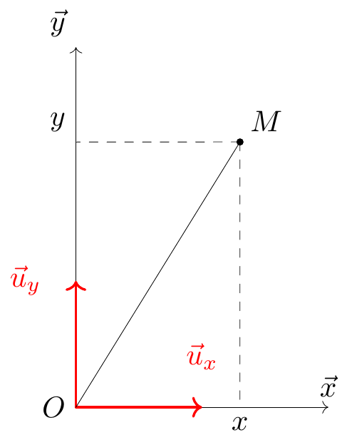

TD 1: Referentiel de mouvement
Objectif: Comprendre les différences entre les notions de coordonnées de base de projection et de référentiel
testing sin tel /git
1 Lecture obligatoire
This is the lecture
2 Exercise 1:
3 Exercise 3: Combinaison mouvement lineaire et mouvement
Il est impératif de bien comprendre qu’on peut exprimer une vitesse relative à relative à un référentiel. Le mouvement d’un point est donc relatif à un observateur fixe dans un référentiel d’étude.
Tip
Un référentiel (ou solide de référence) est un ensemble de points tous fixes les uns par rapport aux autres. L’observateur qui étudie le mouvement d’un point est lui-même immobile dans ce référentiel.
Si l’on considère une vitesse liée à un référentiel fixe, il faut comprendre qu’il est parfois plus simple d’exprimer celle-ci sur une base tournante.
Rappel: Un vecteur peut changer dans le termps en “tournant”, il faut toujours savoir dans quel réferentiel on dérive un vecteur
3.0.1 Problème
3.0.2 Analyse Cartesiène
On note \(R_{C}\) le référentiel associé aux coordonnées cartésiennes. La vitesse angulaire \(\omega\), exprimé en \(\frac{rad}{s}\), correspond à la vittese angulaire du disque par rapport au referentiel \(R_{C}\). Pendant un temp \(dt\), le disque tourne de \(d\theta\), donc cela correspond à:
\[ \dfrac{d\theta}{dt} = \omega \]
en faisant l’integral, nous avons:
\[ \theta = \omega t + \text{const} \quad\rightarrow\quad \text{const} = 0 \text{ car } \theta = 0 \text{ à } t=0 \]
Maintenant, $v_{0}, exprimée en \(\dfrac{m}{s}\) $ correspond à la vitesse de la fourmi par rapport au disque. Dans \(R_{tournant}\), le mouvement de la fourmi est rectiligne. Pendant \(dt\), la fourmi parcourt \(dr\) dans \(R_{tournant}\), donc:
\[ \dfrac{dr}{dt} = v_{0} \]
en faisant l’integral, nous avons:
\[ r = v_{0} t + \text{const} \quad\rightarrow\quad \text{const} = 0 \text{ car } r = 0 \text{ à } t = 0 \]
En fait, ce n’est pas rigoureaux car \(\theta\) ne peut pas être définis à \(t=0\). Finalement
\[ r = \dfrac{v_{0}}{\omega}\theta \]
Entonces thi is the other